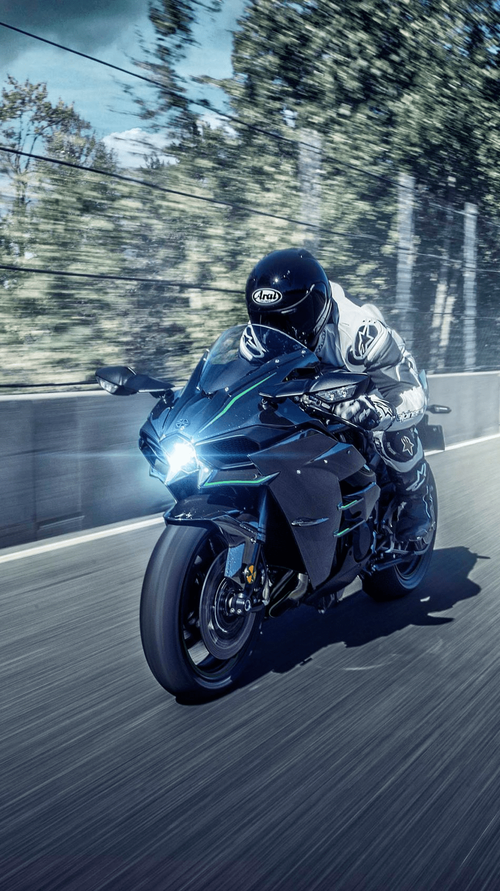

1). kawasaki como fabricante:
Empresa japonesa global (Kawasaki Heavy Industries).
Sectores: motocicletas, trenes, aeroespacial, robótica.
División de motos desde los años 60.

2). kawasaki como marca:
Sinónimo de rendimiento y tecnología.
Modelos icónicos: Ninja ZX-10R, H2R, Z1000.
Posicionamiento: potencia, velocidad, agresividad

3). kawasaki como simbolo en la indstria:
Representa rebeldía con ingeniería de precisión.
Espíritu de alto rendimiento, no apto para cualquiera.